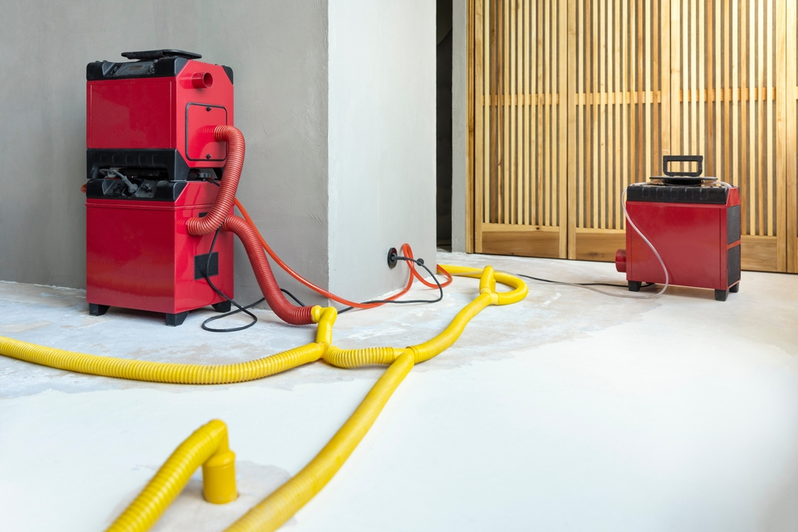
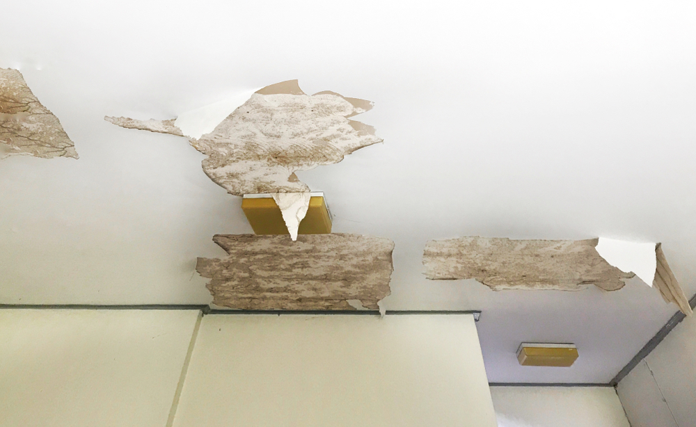
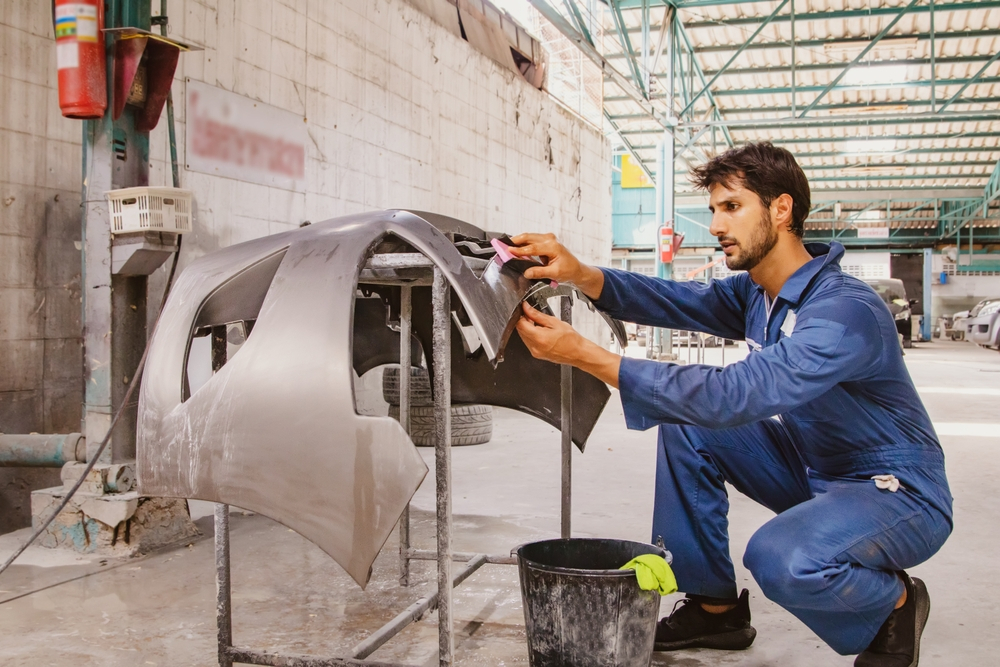
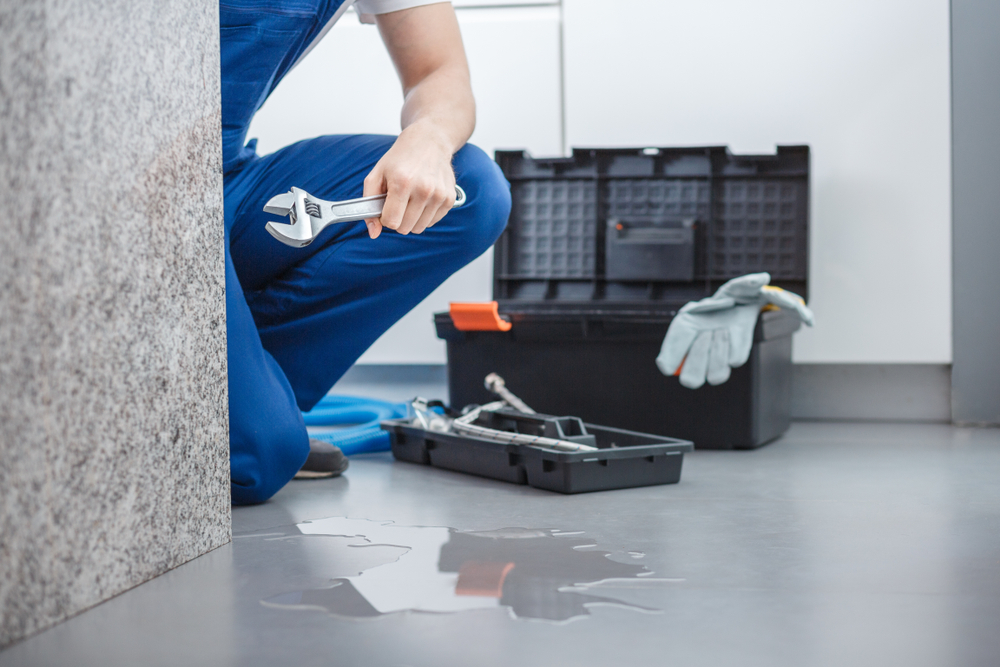

Residential Water Extraction
Emergency water removal project for a residential property affected by a burst pipe. Our team responded immediately, extracted standing water, and prevented further structural damage.

Structural Drying Project
Complete structural drying service using advanced drying equipment. Moisture levels were monitored until the property was fully dry and safe.

Ceiling Water Damage Repair
Restoration of water damaged ceilings caused by roof leakage. Damaged materials were removed and replaced to restore safety and appearance.

Flood Cleanup & Sanitization
Large scale flood cleanup project including water extraction, debris removal, and complete sanitization to ensure a clean and healthy environment.

Pipe Leak Damage Restoration
Restoration project following hidden pipe leakage. Our team identified the source, dried affected areas, and prevented mold growth.
Mold Prevention & Treatment
Preventive mold treatment project after water exposure. Specialized techniques were used to protect indoor air quality.